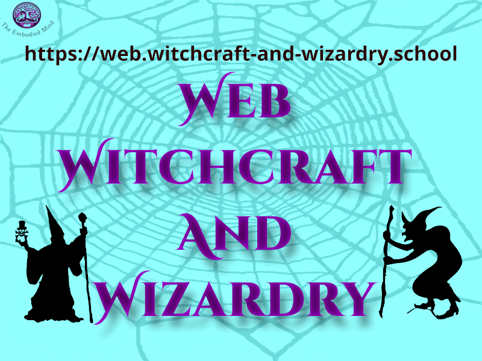

Phase 1 - Minimum Viable Product
Link: https://birkbeck2.github.io/puffin-web-development-website-edmundmulligan/
GitHub: https://github.com/Birkbeck2/puffin-web-development-website-edmundmulligan.git
Edmund Mulligan

Web Witchcraft and Wizardry is a project that teaches kids how to create web sites using HTML, CSS and JavaScript, using a metaphor of magic and wizardry to make learning engaging and fun.
It started as an idea for Kingston University Coder Dojo, a computing club for young people. This project took the original concept and expanded it into a comprehensive learning experience.
Link: https://birkbeck2.github.io/puffin-web-development-website-edmundmulligan/
GitHub: https://github.com/Birkbeck2/puffin-web-development-website-edmundmulligan.git
Link: https://birkbeck2.github.io/puffin-web-project-edmundmulligan/
GitHub: https://github.com/Birkbeck2/puffin-web-project-edmundmulligan.git
Link: https://web.witchcraft-and-wizardry.school
GitHub: https://github.com/edmundmulligan/witchcraft-and-wizardy.school.git